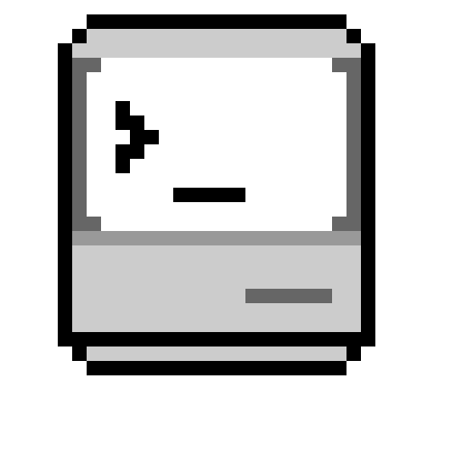

Ping.
Introducing Flynn. A telnet and finger client for the Macintosh you refuse to throw away. Now in 256 glorious colors on System 7.

Four simultaneous sessions. One 68000 processor. Zero apologies.

Introducing Flynn. A telnet and finger client for the Macintosh you refuse to throw away. Now in 256 glorious colors on System 7.
Four simultaneous sessions. One 68000 processor. Zero apologies.
Everything a terminal should be. Nothing a Mac Plus can't handle.
Full IAC negotiation, VT100/VT220/xterm emulation, ANSI-BBS with CP437, OSC sequences, and RFC 1288 finger with forwarding. Yes, finger. It's 1986 somewhere.
Up to 4 simultaneous connections in resizable windows, each with 192 lines of scrollback and per-bookmark fonts, terminal types and themes.
Color QuickDraw on System 7, monochrome elegance on System 6. UTF-8 box-drawing, Unicode glyphs, emoji and Braille patterns — on a 68000.
MacTCP and Open Transport. Apple Events, telnet:// URLs, movable modal dialogs, persistent preferences. Aligned with the 1992 Human Interface Guidelines. Naturally.
Eleven built-in themes, plus Ghostty-format import for four of your own. Now for the hard part: which one will it be?
Light
Mono. The default.
Dark
Mono. After hours.
Solarized Light
Schoonover approved.
Solarized Dark
The other half.
TokyoNight Day
Neon, at noon.
TokyoNight
Neon, at night.
Amber CRT
Phosphor nostalgia.
System 7
The CLUT classic.
Dracula
Bites in purple.
Nord
Arctic and calm.
Mono themes run on everything, including the Mac Plus. Color themes want a Mac II or later — Flynn checks so you don't have to.
On System 6 Flynn wears monochrome, and wears it well. One bit per pixel. Every bit earned.


Three editions. One 800K disk each. Choose your commitment level.
All of it. Four sessions, 256-color themes, scrollback, finger, bookmarks, the works.
~1024KB of memory
The core. One session, favorites, monochrome. For Macs that count their kilobytes.
~340KB of memory
Only the essentials. One session, smallest footprint. Runs where nothing else will.
~256KB of memory
.dsk is an 800K floppy image; .sit is a StuffIt 1.5.1 archive. Also on Macintosh Garden. Requires a Mac Plus or later, 4MB RAM recommended, System 6.0.8+, and MacTCP or Open Transport.
Flynn was 100% vibe coded with Claude Code. Source available on GitHub.
© 2026 ecliptik/flynn. ISC licensed. Flynn is a telnet client and, coincidentally, a guy who got stuck inside a computer. Macintosh, System 6 and System 7 are trademarks of their respective owners, most of whom have moved on. Telnet is a protocol, not a suggestion.